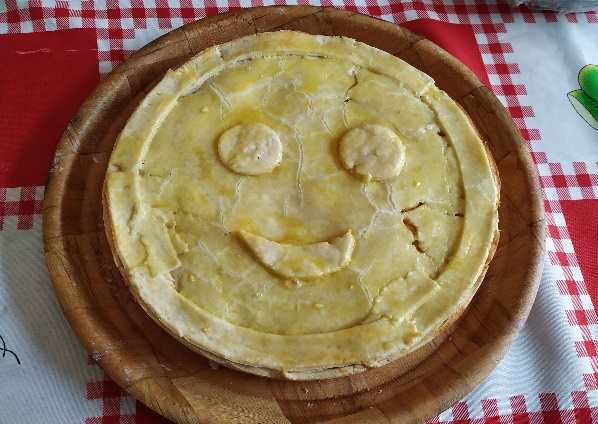
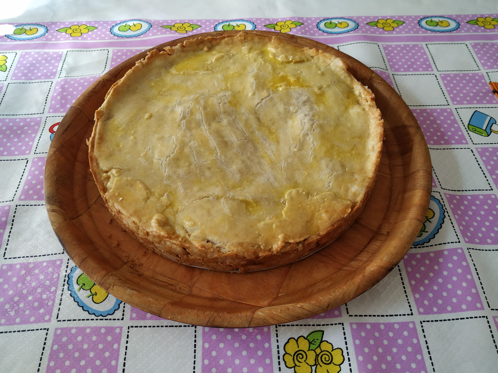

Empadão ou Empadinhas
Ingredientes
- 1 ½ xíc. de farinha de trigo
- 1 ½ xíc. de amido de milho
- 1 xíc. de óleo
- ½ xíc. de leite morno
- 1 pitada de sal
- 1 colher de fermento
- 1 gema para pincelar
Modo de Preparo
Misturar tudo numa travessa, abrir a massa, forrar uma forma, colocar o recheio desejado e cobrir com massa. Pincelar com uma gema e pôr para assar.


